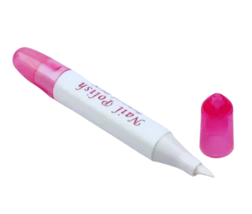
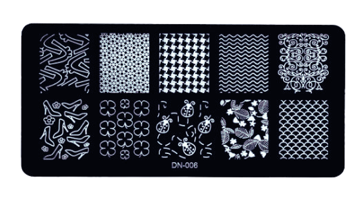

PRODUCTS
prices shown are base prices without shipping fees||click to jump to the product selection
Nail Color Lacquer
Violet matte purple from violet series. With undertones of pink and white. Violet is the color of light at the short wavelength end of the visible spectrum, between blue and invisible ultraviolet. It is one of the seven colors that Isaac Newton labeled when dividing the spectrum of visible light in 1672. Violet light has a wavelength between approximately 380 and 435 nanometers.[2] The color's name is derived from the violet flower In the RGB color model used in computer and television screens, violet is produced by mixing red and blue light, with more blue than red. In the RYB color model historically used by painters, violet is created with a combination of red and blue pigments and is located between blue and purple on the color wheel. In the CMYK color model used in printing, violet is created with a combination of magenta and cyan pigments, with more magenta than cyan.
Violet is closely associated with purple. In optics, violet is a spectral color (referring to the color of different single wavelengths of light), whereas purple is the color of various combinations of red and blue (or violet) light,[5][6] some of which humans perceive as similar to violet. In common usage, both terms are used to refer to a variety of colors between blue and red in hue.
Violet has a long history of association with royalty, originally because Tyrian purple
"Ube halaya color"
₱ 35.00
Bronze is an alloy consisting primarily of copper, commonly with about 12-12.5% tin and often with the addition of other metals (including aluminium, manganese, nickel, or zinc) and sometimes non-metals, such as phosphorus, or metalloids such as arsenic or silicon. These additions produce a range of alloys that may be harder than copper alone, or have other useful properties, such as strength, ductility, or machinability.
The archaeological period in which bronze was the hardest metal in widespread use is known as the Bronze Age. The beginning of the Bronze Age in western Eurasia and India is conventionally dated to the mid-4th millennium BCE, and to the early 2nd millennium BCE in China;[1] elsewhere it gradually spread across regions. The Bronze Age was followed by the Iron Age starting from about 1300 BCE and reaching most of Eurasia by about 500 BCE, although bronze continued to be much more widely used than it is in modern times.
Because historical artworks were often made of brasses (copper and zinc) and bronzes with different compositions, modern museum and scholarly descriptions of older artworks increasingly use the generalized term "copper alloy" instead.'
The discovery of bronze enabled people to create metal objects that were harder and more durable than previously possible. Bronze

"Bronze Medalist"
₱ 50.00
Pink is the color of a namesake flower that is a pale tint of red.[2][3] It was first used as a color name in the late 17th century.[4] According to surveys in Europe and the United States, pink is the color most often associated with charm, politeness, sensitivity, tenderness, sweetness, childhood, femininity, and romance. A combination of pink and white is associated with chastity and innocence, whereas a combination of pink and black links to eroticism and seduction.[5] In the 21st century, pink is seen as a symbol of femininity, though this has not always been true; in the 1920s, pink was seen as a color that reflected masculinity.
The color pink has been described in literature since ancient times. In the Odyssey, written in approximately 800 BCE, Homer wrote "Then, when the child of morning, rosy-fingered dawn appeared..."[9] Roman poets also described the color. Roseus is the Latin word meaning "rosy" or "pink." Lucretius used the word to describe the dawn in his epic poem On the Nature of Things (De rerum natura).[10]
Pink was not a common color in the fashion of the Middle Ages; nobles usually preferred brighter reds, such as crimson. However, it did appear in women's fashion and religious art. In the 13th and 14th centuries, in works by Cimabue and Duccio, the Christ child was sometimes portrayed dressed in pink,

"Barbie Pink"
₱ 46.00
Green is the color between cyan and yellow on the visible spectrum. It is evoked by light which has a dominant wavelength of roughly 495–570 nm. In subtractive color systems, used in painting and color printing, it is created by a combination of yellow and cyan; in the RGB color model, used on television and computer screens, it is one of the additive primary colors, along with red and blue, which are mixed in different combinations to create all other colors. By far the largest contributor to green in nature is chlorophyll, the chemical by which plants photosynthesize and convert sunlight into chemical energy. Many creatures have adapted to their green environments by taking on a green hue themselves as camouflage. Several minerals have a green color, including the emerald, which is colored green by its chromium content.
During post-classical and early modern Europe, green was the color commonly associated with wealth, merchants, bankers and the gentry, while red was reserved for the nobility. For this reason, the costume of the Mona Lisa by Leonardo da Vinci and the benches in the British House of Commons are green while those in the House of Lords are red.[1] It also has a long historical tradition as the color of Ireland and of Gaelic culture. It is the historic color of Islam, representing the lush vegetation of
"Earthy Green"
₱ 25.00
Red is the color at the long wavelength end of the visible spectrum of light, next to orange and opposite violet. It has a dominant wavelength of approximately 625–740 nanometres.[1] It is a primary color in the RGB color model and a secondary color (made from magenta and yellow) in the CMYK color model, and is the complementary color of cyan. Reds range from the brilliant yellow-tinged scarlet and vermillion to bluish-red crimson, and vary in shade from the pale red pink to the dark red burgundy.[2]
Red pigment made from ochre was one of the first colors used in prehistoric art. The Ancient Egyptians and Mayans colored their faces red in ceremonies; Roman generals had their bodies colored red to celebrate victories. It was also an important color in China, where it was used to color early pottery and later the gates and walls of palaces.[3]: 60–61 In the Renaissance, the brilliant red costumes for the nobility and wealthy were dyed with kermes and cochineal. The 19th century brought the introduction of the first synthetic red dyes, which replaced the traditional dyes. Red became a symbolic color of communism and socialism; Soviet Russia adopted a red flag following the Bolshevik Revolution in 1917, until the breakup of the Soviet Union in 1991. Communist China adopted the red flag following the Chinese Revolution of 1949. It was adopted
"Red Ribonette"
₱ 35.00
Silver is a chemical element with the symbol Ag (from the Latin argentum, derived from the Proto-Indo-European h₂erǵ: "shiny" or "white") and atomic number 47. A soft, white, lustrous transition metal, it exhibits the highest electrical conductivity, thermal conductivity, and reflectivity of any metal.[5] The metal is found in the Earth's crust in the pure, free elemental form ("native silver"), as an alloy with gold and other metals, and in minerals such as argentite and chlorargyrite. Most silver is produced as a byproduct of copper, gold, lead, and zinc refining.
Silver has long been valued as a precious metal. Silver metal is used in many bullion coins, sometimes alongside gold:[6] while it is more abundant than gold, it is much less abundant as a native metal.[7] Its purity is typically measured on a per-mille basis; a 94%-pure alloy is described as "0.940 fine". As one of the seven metals of antiquity, silver has had an enduring role in most human cultures.
Other than in currency and as an investment medium (coins and bullion), silver is used in solar panels, water filtration, jewellery, ornaments, high-value tableware and utensils (hence the term "silverware"), in electrical contacts and conductors, in specialized mirrors, window coatings, in catalysis of chemical reactions, as a colorant in stained glass, and in specialized confectionery.

"Silver Lining"
₱ 80.00
Black is a color which results from the absence or complete absorption of visible light. It is an achromatic color, without hue, like white and grey.[1] It is often used symbolically or figuratively to represent darkness.[2] Black and white have often been used to describe opposites such as good and evil, the Dark Ages versus Age of Enlightenment, and night versus day. Since the Middle Ages, black has been the symbolic color of solemnity and authority, and for this reason it is still commonly worn by judges and magistrates.[2]
Black was one of the first colors used by artists in Neolithic cave paintings.[3] It was used in ancient Egypt and Greece as the color of the underworld.[4] In the Roman Empire, it became the color of mourning, and over the centuries it was frequently associated with death, evil, witches, and magic.[5] In the 14th century, it was worn by royalty, clergy, judges, and government officials in much of Europe. It became the color worn by English romantic poets, businessmen and statesmen in the 19th century, and a high fashion color in the 20th century.[2] According to surveys in Europe and North America, it is the color most commonly associated with mourning, the end, secrets, magic, force, violence, fear, evil, and elegance.[6]
Black is the most common ink color used for printing books, newspapers and documents, as it

"Black Abyss"
₱ 105.00
Blue is one of the three primary colours in the RYB colour model (traditional colour theory), as well as in the RGB (additive) colour model.[2] It lies between violet and cyan on the spectrum of visible light. The eye perceives blue when observing light with a dominant wavelength between approximately 450 and 495 nanometres. Most blues contain a slight mixture of other colours; azure contains some green, while ultramarine contains some violet. The clear daytime sky and the deep sea appear blue because of an optical effect known as Rayleigh scattering. An optical effect called Tyndall effect explains blue eyes. Distant objects appear more blue because of another optical effect called aerial perspective.
Blue has been an important colour in art and decoration since ancient times. The semi-precious stone lapis lazuli was used in ancient Egypt for jewellery and ornament and later, in the Renaissance, to make the pigment ultramarine, the most expensive of all pigments. In the eighth century Chinese artists used cobalt blue to colour fine blue and white porcelain. In the Middle Ages, European artists used it in the windows of cathedrals. Europeans wore clothing coloured with the vegetable dye woad until it was replaced by the finer indigo from America. In the 19th century, synthetic blue dyes and pigments gradually

"Ocean Blues"
₱ 60.00
Nail Care Tools


"ALL LIQUID BUNDLE"
Cuticle remover, Nail Polish Remover, Cuticle Tint
₱ 80.00

"SHARP SHINY TOOL SET"
Nipper, Nail Cutter, Pusher, Nail File
₱ 150.00

"BASIC NAIL CARE BUNDLE"
Cuticle remover, Nail Polish Remover, Cuticle Tint, Nail Cutter, Pusher
₱ 200.00
Nail Art Needs

DOTTING TOOL
₱ 200.00

POLISH PEN CORRECTOR
₱200.00

NAIL ART STENCIL
₱ 200.00

NAIL ART BRUSHES
₱ 200.00
NAIL ART STAMPER
₱ 200.00
GLITTERS AND SEQUINS
₱ 200.00